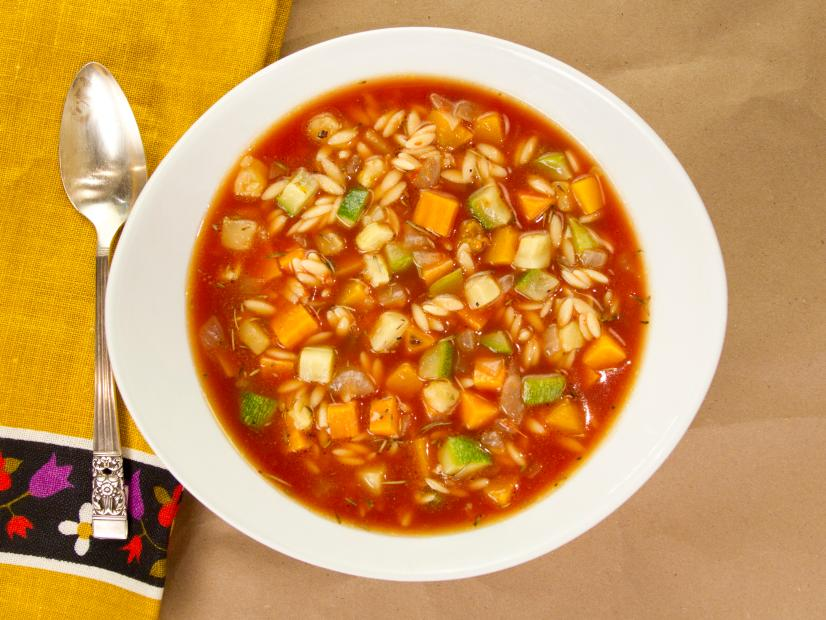

Rustic Fall Vegetable Soup

Description
A hearty, filling soup great for the cooler seasons.
Ingredients
- 1 tablespoon butter or olive oil
- 1 medium yellow onion, finely chopped
- 1 clove garlic, minced
- 1 (28 ounce) can crushed tomatoes
- 1 teaspoon dried thyme
- 1 tablespoon dried rosemary
- 4 cups low sodium chicken broth
- 1 medium winter squash, peeled & diced
- 1 medium zucchini, diced
- 1 medium sweet potato, peeled & diced
- salt and freshly ground black pepper to taste
Steps
-
In a large heavy-bottomed pot, heat the butter or oil over medium-high
heat. Add the onion and saute until fragrant and translucent. Add the
garlic and saute until golden brown.
-
Add the crushed tomatoes, chicken broth, rosemary and thyme and stir to
mix. Turn the heat to just below high and bring to a gentle boil,
stirring frequently.
-
Add the remaining vegetables, stirring to evenly distribute the
ingredients throughout. Allow the soup to return to a boil then reduce
the heat to maintain a simmer. Cover and let cook for at least 30
minutes up to 2 hours, stirring occasionally to keep the ingredients
from sticking to the bottom of the pot.
-
Remove from heat, season with salt & pepper to taste. Serve with sliced
crusty bread.